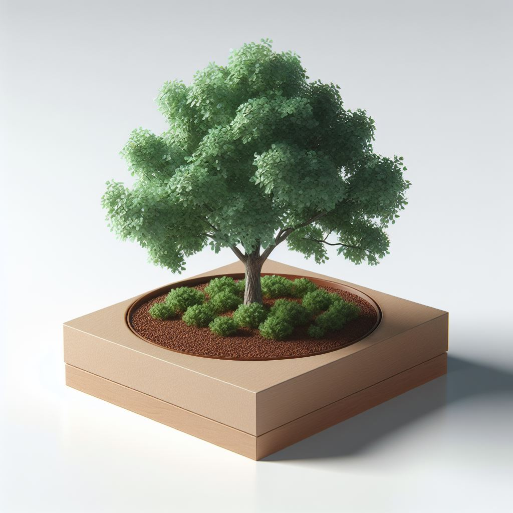
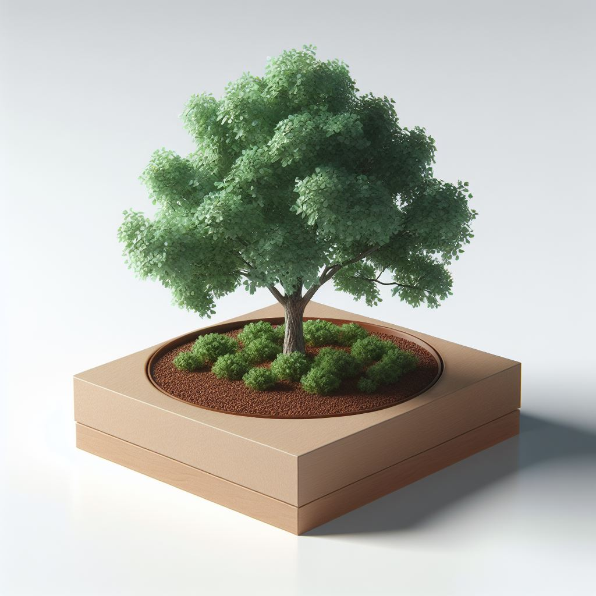

Welcome to Lucky Shrub
At Lucky Shrub, we're passionate about turning your outdoor space into a green oasis.

At Lucky Shrub, we're passionate about turning your outdoor space into a green oasis.


Based in beautiful Tucson, Arizona, our small but dedicated team specializes in garden design, maintenance, and plant sales. We believe that a well-designed garden can bring beauty and tranquility to your life, and we're here to make that a reality. Whether you're looking for a stunning garden makeover, need regular maintenance, or want to bring the outdoors in with our handpicked selection of plants, Lucky Shrub has you covered. Our founder, Jason, is a garden design maestro, and Maria takes care of our thriving plant nursery. Together, they've cultivated a business rooted in their love for plants and a desire to make your outdoor space flourish. We invite you to explore our services and browse our nursery, and we look forward to being your partner in creating the garden of your dreams.


 
